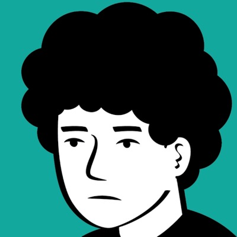

Efficient Foundation Models
for Real-Time Embodied AI
Making robot foundation models fast enough, cheap enough, and safe enough to actually deploy.
Skip to contentOverview
Embodied foundation models are now good enough to matter. Most of them still miss the latency, memory, and power budgets required to run on the robot itself. This workshop is about that gap: what it actually takes to make an embodied model general, fast, and deployable on real hardware rather than in a datacenter.
This is for you if you work on compression, quantization, distillation, adaptive compute, action chunking, hardware-aware design, edge-cloud systems, or safety and control under timing constraints, whether you build vision-language-action policies, world-action models, or something that does not fit either label. Contributed papers are non-archival; submissions closed October 19 and acceptance notifications have been released.
Why now
RT-2's 55B parameters run at 1 to 3 Hz on cloud TPUs that cost more than the robot. OpenVLA reports roughly 6 Hz on an RTX 4090, and that is a desktop GPU rather than anything that rides onboard. Dexterous manipulation generally wants closed-loop rates well above what these policies deliver, and while some systems close that gap with a fast low-level servo loop under a slower policy, the policy rate still bounds how quickly the robot can change its mind. Meanwhile humanoid programs at scale (Tesla Optimus, Agility Digit, Unitree G1) make per-unit inference cost a first-order constraint: on platforms where the robot costs less than a datacenter GPU, onboard compute is a budget rather than a preference.
| Model | Params | Hardware | Reported figure | Measures |
|---|---|---|---|---|
| Action policies | ||||
| RT-2 | 55B | Cloud TPU | 1–3 Hz | closed-loop control |
| OpenVLA | 7B | RTX 4090 | ~6 Hz | throughput |
| π0 | 3.3B | – | 50 Hz | open-loop chunk rate |
| TinyVLA | 0.7–1.3B | RTX A6000 | 20× vs OpenVLA | relative latency |
| OpenVLA-OFT | 7B | A100 | 109.7 Hz (LIBERO) | throughput |
| MiniVLA | 1B | L40S | 12.5 Hz | throughput |
| HyperVLA | 90× fewer active | L4 | 482→4 ms/step | relative latency |
| BitVLA | 1.58-bit ternary | – | 11× vs OFT | relative memory |
| World models | ||||
| DreamDojo | 2–14B | RTX 5090 | 10.8 FPS | offline rollout |
| DreamZero | 14B | GB200 | 7 Hz | closed-loop control |
The last column is the point: these numbers measure different things on different hardware, so they cannot be ranked against each other. Building an evaluation that can is one of the things we want papers about.
General
One policy across tasks, objects, and embodiments, rather than a model per skill.
Fast
Closed-loop rates that keep up with contact-rich manipulation.
Deployable
Inside a fixed onboard power, memory, and cost budget, not merely running somewhere.
Systems trade these off differently, and few manage all three at once. Speed and deployability pull apart in particular, because raw Hz can be bought with bigger hardware: OpenVLA-OFT reaches 109.7 Hz, but on an A100 that will never ride on the robot.
What we want papers on
Architecture and compression
Smaller backbones, action chunking, quantization, pruning, distillation, and adaptive compute for policies and world models alike. Results reporting real latency, memory, energy, or control-rate gains on robot-relevant hardware are especially welcome, as is any evidence about whether these techniques compose.
Edge-cloud co-design
Deployment trade-offs across onboard, hybrid, and cloud setups, and across heterogeneous accelerators: GPUs, TPUs, Trainium and Inferentia, mobile NPUs. Total cost of ownership at fleet scale is close to unstudied.
Safety under latency
Interruption, fallback, and certification when inference is slow or its timing is variable. Action chunking commits a robot to open-loop execution with no principled way to interrupt it, and certifying systems with stochastic response time remains open.
Updates
- November 6, 2026
- Updated workshop session time and venue per the CoRL 2026 workshop schedule: Thursday, November 12, 2026, Afternoon Session (2:00–6:00 PM CST) at Hilton Austin (500 E. 4th St), Room 408.
- November 5, 2026
- Paper submission results and final acceptance notifications have been released on OpenReview. The final workshop program was published on November 7, 2026.
- October 30, 2026
- Launched the EmbodiedX Season 1 Benchmark and Challenge (
v1.0.0) on NVIDIA L40S and Google Cloud TPU v6e-1. Checkpoint 1 submissions for the CoRL 2026 live workshop spotlight close tomorrow, November 10, 2026, at 23:59 UTC (17:59 CST).
Speakers
Talk times are in the schedule above. Each talk is 25 minutes with 5 for questions.
 JW
JW
OASchedule
Thursday, November 12, 2026, Afternoon Session (2:00–6:00 PM CST, 14:00–18:00) at Hilton Austin, Room 408 (500 East 4th Street, Austin, TX 78701). The four-hour program pairs four invited talks with contributed lightning talks, a poster session in two shifts and a moderated panel. Time is deliberately weighted toward the interactive parts, including live profiling on real Jetson hardware at the open.
| Time (CST) | Session |
|---|---|
| 14:00 | Opening and live profiling Organizers frame the generality, speed, and deployability trilemma, then profile vanilla OpenVLA on a Jetson on stage |
| 14:10 | Dhruv Shah, Princeton University Post-training as the stage where most deployable-efficiency decisions are made. 25 minutes with 5 for questions |
| 14:40 | Yecheng “Jason” Ma, Dyna Robotics Embodied foundation models on a commercial duty cycle, from DYNA-1 to the DYNA-2 world-action model. 25 minutes with 5 for questions |
| 15:10 | Lightning talks Five contributed papers, five minutes each, selected for method diversity |
| 15:35 | Poster session, first shift Eighteen papers on the boards inside Room 408. Afternoon refreshments are served through both shifts |
| 16:00 | Poster session, second shift The remaining seventeen papers. First-shift presenters take their posters down at 16:00 so the second shift can put theirs up |
| 16:25 | Kaifeng Zhang, Sharpa Topic to be confirmed. 25 minutes with 5 for questions |
| 16:55 | Hengtao Guo and Yin Li, Google Cloud MaxText Topic to be confirmed. 25 minutes with 5 for questions |
| 17:25 | Panel Moderated, seating the speakers with Jiajun Wu of Stanford University and Ouais Alsharif of Google DeepMind, and an audience vote before and after |
| 17:50 | Awards and closing Best Paper, the Founding Frontier Leaders recognition for challenge submissions merged before the freeze, and closing remarks |
Room assignments follow the official CoRL 2026 workshop schedule. Attendees arriving on Thursday should note that conference badge pickup is held exclusively at JW Marriott Austin (110 E. 2nd St, Room 201) from 8:00 AM to 1:30 PM CST and closes before the afternoon session begins.
Accepted Papers
Thirty-five papers were accepted from 56 submissions. Every one is presented as a poster in Room 408, and five are additionally selected for a five-minute lightning talk. Titles link to the OpenReview forum, where the review and decision for each paper are posted.
For poster presenters
CoRL poster boards are 4 ft by 8 ft and double-sided, with two posters side by side on each face, so your poster must be smaller than 4 ft by 4 ft, for example 48 in by 36 in. Authors are responsible for printing their own posters. Taping posters to the walls is not permitted by the venue. We are confirming the mounting supplied and will update this line.
Room 408 holds twenty poster slots and we accepted thirty-five papers, so the poster session runs in two shifts: eighteen papers from 15:35 to 16:00, and seventeen from 16:00 to 16:25. Each paper below carries its shift. Presenters are also being emailed. If you need a particular shift because of travel, please email yu@jiafan.org and we will try to accommodate it.
At least one author should attend and present in Austin. We cannot promise remote presentation. If your plans change, please email yu@jiafan.org as early as you can.
- Rolling-WAM: World Action Models with Rolling ImaginationYinghua Zhou et al.Shift 1, 15:35 to 16:00
- Beyond Aggregate Success: Paired Statewise Evaluation of VLA Policy UpdatesQiang GuoShift 2, 16:00 to 16:25
- Inference Latency and Chunk Transitions in Whole-Body Humanoid Loco-ManipulationChuan Qin et al.Shift 2, 16:00 to 16:25
- Group-Wise INT4 Prevents Quantization-Induced Plan Collapse in a Driving Vision-Language-Action PolicyJustin Williams et al.Shift 1, 15:35 to 16:00
- What Makes a VLA Reactive? A Study of Execution Strategies for Dynamic ManipulationZhuoyue Li et al.Shift 2, 16:00 to 16:25
- Revisiting Open-Loop Execution in Robotics: Toward Reactive, Higher-Performing PoliciesMichael Zeng et al.Shift 1, 15:35 to 16:00
- Lost in Translation? Democratizing VLAs through Language-Anchored VLM-to-VLA AdaptationYuri Ishitoya et al.Shift 1, 15:35 to 16:00
- DeFM: Efficient Depth Foundation Models for Real-Time Robot LearningManthan Patel et al.Shift 2, 16:00 to 16:25
- Phaseformer: Minimum Requirements for Multimodal Behavior CloningJoseph C. Liechty and Tucker HermansShift 2, 16:00 to 16:25
- Cache or Denoise Less? Residual Reuse in a Flow-Matching World Action ModelAbhinav Gupta et al.Shift 1, 15:35 to 16:00
- Can Perception Models Run Together? A Memory Ledger for Foundation-Model Perception Beside a Full Navigation Stack on an 8 GB JetsonSmit shende et al.Shift 1, 15:35 to 16:00
- Steeract: Unlocking Action Models Through Few-Shot Temporal SteeringKaichen Zhou et al.Shift 2, 16:00 to 16:25
- Can a Quantized JEPA World-Model Planner Keep Its Task Success on a Neural Engine? A Paired Study of LeWorldModelThomas BlancShift 2, 16:00 to 16:25
- Beyond Guard Accuracy: Safety Screening Under Robot Timing BudgetsPraneeth Narisetty and Shiva Nagendra Babu KoreShift 1, 15:35 to 16:00
- Hertz Is Not Reactivity: Reaction Latency of Chunked Robot Policies Under Stochastic Inference LatencyHyunjun Yi et al.Shift 2, 16:00 to 16:25
- DoomShift: How Much Adaptation Do World Models Need Under Domain Shift?Rohan Nagabhirava et al.Shift 2, 16:00 to 16:25
- Decoupling Balance from Reasoning: When Does a Slow Vision-Language Brain Make a Humanoid Fall?Quang Vu LuuShift 1, 15:35 to 16:00
- WINK: World-Action Imagination in a BlinkKaitlyn Zhang et al.Shift 1, 15:35 to 16:00
- Where Does the Per-Step Cost of History Go? Frame Pooling, Recurrent State and Cache Budgets in a Small-Scale VLA StudyJohnathan Luu et al.Shift 2, 16:00 to 16:25
- Ternary Vision Encoders Without the Straight-Through Estimator: Toward Onboard Robot PerceptionAkshat BhalaniShift 1, 15:35 to 16:00
- Running OmniVLA-7B on an 8 GB Jetson Orin Nano: What int4 Preserves and What Token Pruning BreaksJayden VasquezShift 2, 16:00 to 16:25
- Selective Q-Chunking: One-Step Candidate Selection for Real-Time Multi-Stage ManipulationDaniel ZhuShift 1, 15:35 to 16:00
- Sixteen Numbers per Skill: A Compact Linear Action Space for Segment-Level Robot PlanningSrihith MudakalaShift 1, 15:35 to 16:00
- Adaptive Loss Weighting for Efficient One-Step Flow Policies in Robot ManipulationBharath Chandra Reddy IrigireddyShift 2, 16:00 to 16:25
- ASPEN: Adaptive Semantic Reasoning via Command Persistence Prediction for Efficient Navigation VLAsVieri Naufal Akustia and Bin HuShift 1, 15:35 to 16:00
- πR²: Reactive Real-time Flow PoliciesSungjae Park and Shubham TulsianiShift 1, 15:35 to 16:00
- ApertureVLA: A Fast 0.2B Vision-Language-Action PolicyShukun Huang et al.Shift 1, 15:35 to 16:00
- Does a Robot’s Failure Monitor Still Work After a Speed-Up?Abraham YeungShift 2, 16:00 to 16:25
- When Visual Token Pruning Loses CountSarah Alharbi and Marios SavvidesShift 1, 15:35 to 16:00
- Clean Forcing: Drift-Resistant Autoregressive Video Diffusion with a Frozen BaseWenqing Wang et al.Shift 2, 16:00 to 16:25
- FirmVLA: Task-Grounded Sequence-SLO Serving for Heterogeneous Robot PoliciesAhnaf Adib et al.Shift 2, 16:00 to 16:25
- Streaming Failure Forecasting: Closed-Form Online Learning of VLA Failure Monitors under DriftAmit Hemant Jadhav et al.Shift 1, 15:35 to 16:00
- What Survives Structural Compression of a Navigation VLA? Selection, Distillation, and Evaluation at a Device Memory BudgetTimothy TongShift 2, 16:00 to 16:25
- Plan-Staleness Deadlines for Onboard ReasoningHassan IqbalShift 2, 16:00 to 16:25
- How a VLA Is Trained Shapes How It QuantizesVishruth BharathShift 1, 15:35 to 16:00
Call for Papers
We solicit four-page extended abstracts, plus unlimited pages for references, on efficiency across the whole space of embodied foundation models: VLA policies, world-action models, and emerging architectures alike.
Topics
- Efficient architectures for VLA policies, world-action models, and emerging designs: action chunking, mixture-of-experts, early exit, diffusion and flow step-reduction
- Compression for robot foundation models: quantization, pruning, distillation
- Memory-efficient adaptation and fine-tuning
- Benchmarking methodology, including whether efficiency techniques compose
- Hardware-aware design across accelerators: GPU, TPU, AWS Trainium and Inferentia, mobile NPUs
- Edge-cloud hybrid architectures for robot fleets
- Safety and latency trade-offs, and fallback policies under stochastic response time
- Efficient world models for online planning and real-time safety monitoring
Submission
Four pages plus unlimited references, hosted on OpenReview, reviewed double-blind. Submissions must be anonymized.
Non-archival. Accepted papers are not archived as formal publications, so submitting here does not affect your ability to submit the same work to a main conference. Concurrent submissions and work under review elsewhere are permitted. Previously published work that fits the scope is also eligible, tracked and reviewed separately from new work, so the two do not compete against each other. Every accepted paper in either track gets a poster, and lightning talks are drawn from both. Best Paper is limited to the new-work track. Papers already accepted to the CoRL 2026 main conference are not eligible.
Submission portal: OpenReview. Paper submissions closed on October 19, 2026, and acceptance notifications have been released.
Review and presentation
We aimed for three reviews per submission. With 56 submissions and a program committee of six, each submission received one review, from the organizing committee or the invited program committee, together with a decision rationale from the chair. Paper acceptance decisions have been released on OpenReview as of November 5, 2026. All accepted papers are presented as posters, and five are additionally selected for a five-minute lightning talk.
Embodied Efficiency Challenge
EmbodiedX (embodied-efficiency-bench) is an open, closed-loop serving benchmark charting single-chip latency-throughput Pareto frontiers across Track 1A (π0.5-LIBERO), Track 1B (GR00T N1.7-3B), and Track 2 (Cosmos-Predict2.5-2B) in both Closed (frozen-checkpoint parity) and Open (Stage-2 task-verified compression) divisions. Season 1 standardizes on two accessible cloud accelerators, NVIDIA L40S (48 GB) and Google Cloud TPU v6e-1 (32 GB), opening unseeded on October 30 with a two-phase commit-reveal protocol that keeps participant kernels private until the freeze.
Awards and checkpoints. Early submissions merged before the November 10, 2026 (23:59 UTC) freeze are recognized live on stage at CoRL on November 12 as Founding Frontier Leaders. Season 1 closes December 18, 2026 (23:59 AoE) for official category awards across each track in Interactive Reactivity (C = 1 p99), Real-Time Fleet Throughput, and Green Embodied Efficiency (Actions/J, Predictions/J), verified on clean organizer hardware over a held-out trace split. Verified Season 1 category winners receive monetary prizes, an official CoRL 2026 EEAI Workshop Award Certificate, an invitation to apply for Google Cloud credits, and an invitation to co-author the post-season EmbodiedX Season 1 Systems Report.
Challenge page and live leaderboard → · Awards & dates · Protocol & commit-reveal · GitHub repository · Methodology specification (PDF)
Important Dates
- October 19, 2026
- Paper submission deadline (extended from October 12)
- October 30, 2026
- EmbodiedX Season 1 benchmark and leaderboard open
- November 5, 2026
- Final paper acceptance notifications released on OpenReview
- November 7, 2026
- Final workshop program published
- November 10, 2026
- Challenge Checkpoint 1: CoRL live spotlight freeze (23:59 UTC)
- November 12, 2026
- Workshop at CoRL 2026 (2:00–6:00 PM CST, Hilton Austin, Room 408), with live Founding Frontier presentation
- December 18, 2026
- Challenge Checkpoint 2: Season 1 awards freeze (23:59 AoE; +24h private finalist container reveal)
Paper deadlines are 23:59 Anywhere on Earth (AoE). Following the December 18 Season 1 freeze, the public EmbodiedX leaderboard remains open continuously for rolling pull requests in 2027.
Organizers
JWProgram Committee
We thank the following reviewers for volunteering their time on the contributed papers.
- Aaryan Agrawal, Service Robot Co.
- Yoofi Annan, Figure AI
- Rajasekhar Josyula, Tesla AI
- Nitheesh K Lakshminarayana, Nimble Robotics
- Mangat Rai, IBM
- Sriharsha Sammeta, Google